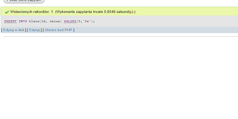

| Treść zapytania | zrzuty ekranu |
| Zapisujące w tabeli klasa nowy rekord danych: id=5, nazwa=3a |  |
| wyświetlające jedynie wszystkie klasy oraz średnią obliczoną ze wszystkich średnich ocen uczniów zgrupowanych w danej klasie |  |
| tworzące użytkownika Dyrektor na localhost z hasłem dyr_123 |  |
| nadające prawa dla użytkownika Dyrektor pełne uprawnienia do wszystkich tabel w bazie szkola, |  |